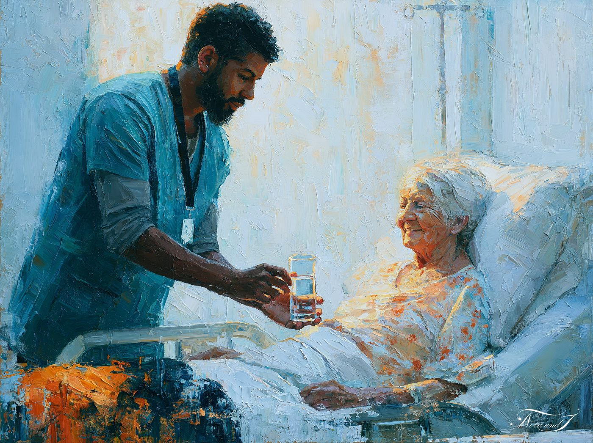
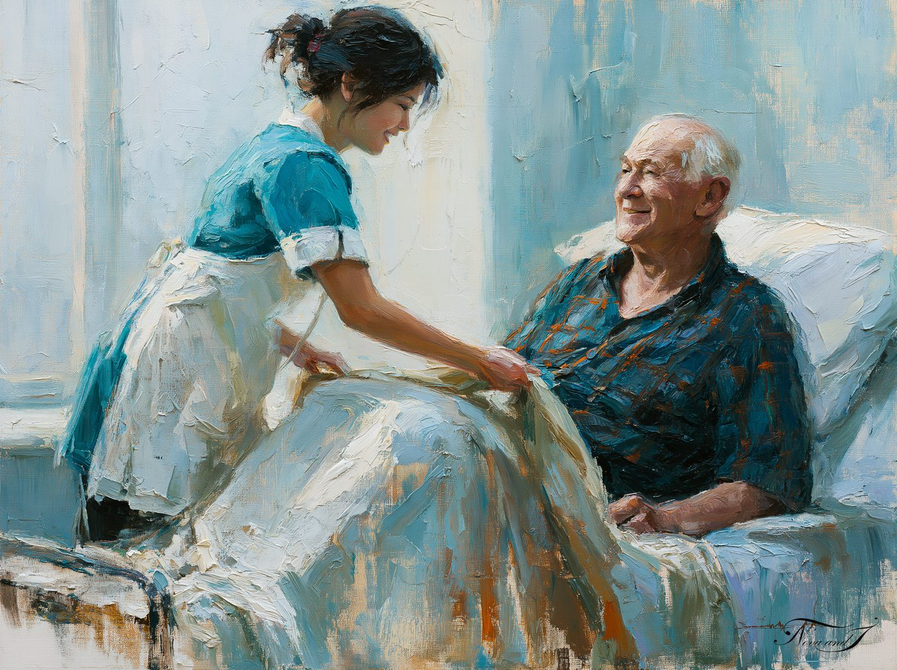
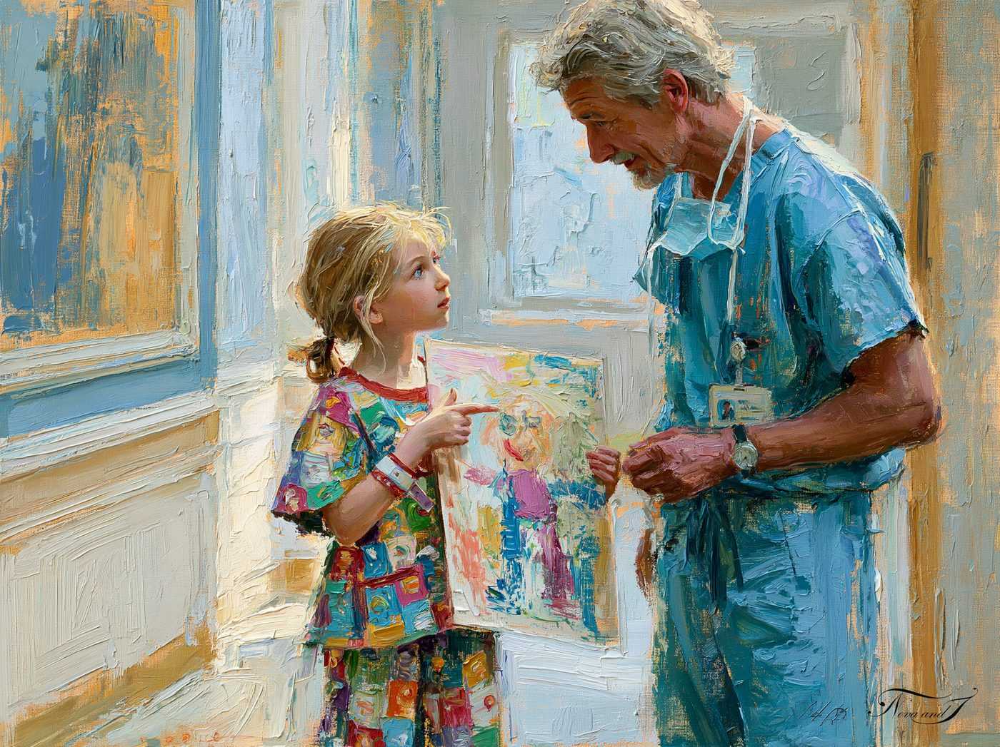
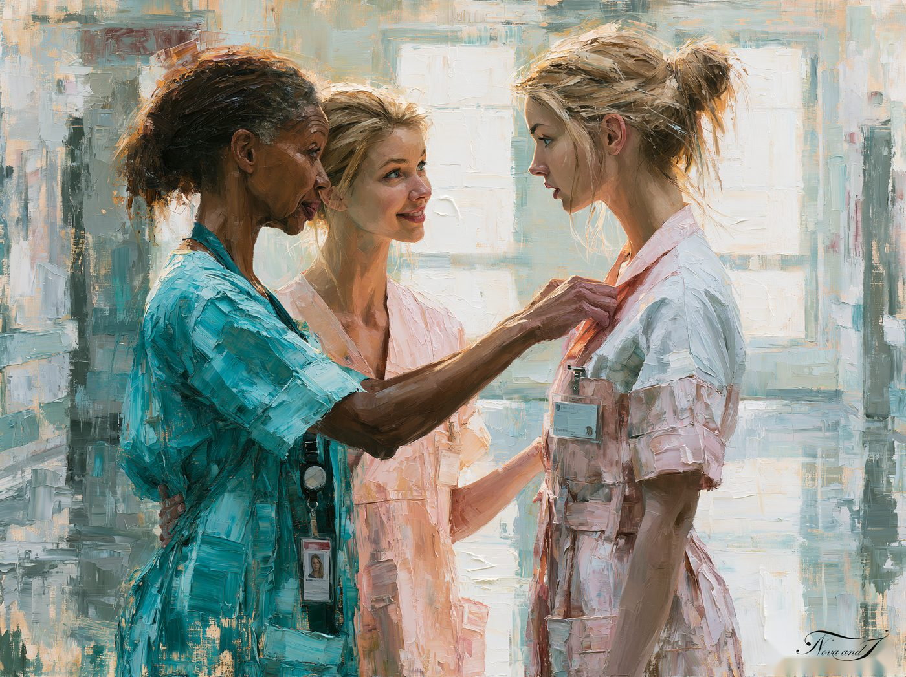

Via Gnosis · Héros du quotidien
Des gestes simples, répétés, qui marquent durablement une vie ou un souvenir — un verre d'eau tendu, un dessin expliqué, une transmission silencieuse d'une génération à l'autre.

Œuvre n° 16
30 × 40 cm — 50 €

Œuvre n° 17
30 × 40 cm — 50 €

Œuvre n° 18
30 × 40 cm — 50 €
Œuvre n° 19
30 × 40 cm — 50 €

Œuvre n° 20
50 × 70 cm — 150 €
Nous contacter
Héros du quotidien — Hôpital Nord Franche-Comté — 1er au 25 septembre 2026